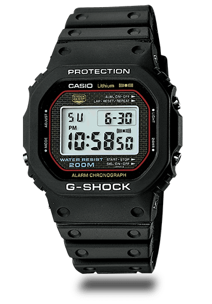
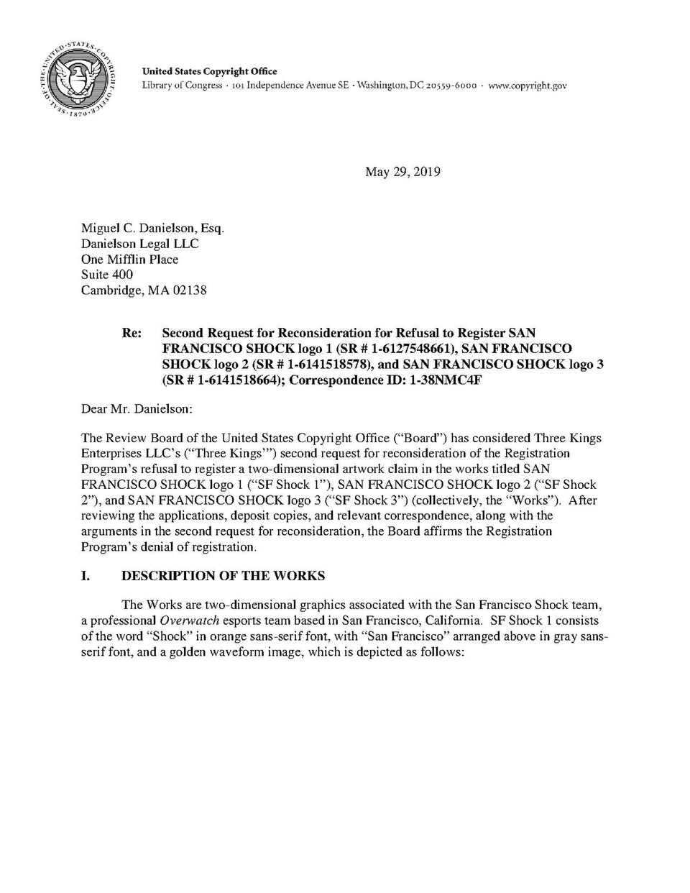

홈 > 브랜드 매거진 > 지샥
지샥
지샥(G-Shock)은 일본 카시오가 1983년 출시한 내충격·고내구성 시계 라인이다.
산업 분야 패션·럭셔리 · 공개 등급 자료 기반 · 브랜드 평가 4.3 ★


한눈에 보는 브랜드
지샥(G-SHOCK)은 카시오 엔지니어 이베 기쿠오가 개발해 1983년 4월 첫 모델 DW-5000C로 세상에 나온 충격 저항 시계 브랜드다. 아버지에게 받은 시계를 길에서 떨어뜨려 깨뜨린 경험이 출발점이 됐고, 배터리 10년·방수 10바·낙하 10미터를 뜻하는 '트리플 10' 목표 아래 약 200개의 시제품을 거쳐 완성됐다.
첫 전환점은 고무공 내부가 충격을 받지 않는 원리를 응용한 중공 구조의 발견이었고, 두 번째 전환점은 1990년대 미국 스트리트·스케이트 문화와 결합하며 글로벌 패션 아이콘으로 도약한 것이다. 현재 카시오 시계 사업의 핵심 축으로, 연간 백수십만 개 규모로 판매된다.
브랜드 관점
지샥의 차별점은 스마트워치 경쟁사와 정면으로 싸우지 않는다는 데 있다. 애플워치가 아이폰 연동과 헬스 기능으로, 가민·순토가 GPS와 운동 데이터로 경쟁하는 동안 지샥은 배터리 교체 부담이 적고 구독료가 없으며 낙하·물·열에 견디는 '도구로서의 견고함'을 핵심 가치로 지킨다.
북미 러기드 워치 시장의 약 4분의 1을 점유하며, 입문가 100달러 안팎으로 500달러 이상 경쟁군과 가격대를 분리한 것이 강점이다. 최근 변화의 핵심은 2019년 GA-2100, 일명 카시오크의 성공이다.
고급 시계의 팔각 베젤 실루엣을 십수만 원대로 재해석해 새로운 세대를 끌어들였고, 동시에 풀메탈 MR-G로 일본 장인정신을 담은 고가 라인을 확장해 가격 양극화 전략을 구사한다. 한국 독자에게는 견고한 공구 시계라는 인식을 넘어, MZ세대의 데일리·스트리트 패션 아이템이자 한정판 컬래버 수집 대상으로 자리 잡은 흐름이 가장 주목할 지점이다.
시작과 성장
지샥이 태어난 1980년대 초는 쿼츠 혁명으로 시계가 정밀해진 대신 얇고 깨지기 쉬워진 시대였다. 카시오의 젊은 엔지니어 이베 기쿠오는 1981년 길에서 시계를 떨어뜨려 산산조각 낸 뒤, 시류와 반대로 '깨지지 않는 시계'를 구상했다.
그는 소수의 개발팀과 함께 배터리 10년·방수 10바·낙하 10미터의 '트리플 10' 기준을 세우고 약 200개의 시제품을 시험했으나 충격 흡수 벽에 부딪혔다. 첫 번째 전환점은 놀이터의 고무공에서 왔다.
튀어 오르는 공의 중심부가 충격을 받지 않는다는 관찰에서 무브먼트를 공중에 띄우는 중공 구조를 착안했고, 1983년 4월 DW-5000C가 출시됐다. 두 번째 전환점은 해외 확장이다.
1990년대 미국에서 경찰·소방·군 등 거친 직업군과 힙합·스케이트 문화가 지샥을 받아들이며 기능성 도구에서 문화적 상징으로 변모했고, 이후 유럽과 아시아로 퍼지며 카시오 시계 사업의 대표 브랜드로 성장했다.
브랜드 아이덴티티
지샥의 핵심 가치는 '절대적 견고함(Absolute Toughness)'이라는 단 하나의 약속에 응축된다. 비주얼 아이덴티티는 이 약속을 그대로 드러낸다.
두툼한 보호 베젤, 6시 방향의 상징적 전면 버튼, 그리고 방수·내충격 등 기능 사양을 글자로 박아 넣는 펑션 로고가 대표적이다. 미관보다 기능을 앞세운 실용주의 디자인 언어다.
타깃은 거친 환경의 전문 직업군에서 출발해 오늘날 스트리트 패션과 아웃도어를 즐기는 폭넓은 세대로 확장됐다. 브랜드 보이스는 과시 없이 단단하다.
'어떤 상황에서도 멈추지 않는다'는 도구의 신뢰를 전면에 내세우며, 한정판과 아티스트 협업으로 그 단단함에 문화적 개성을 더한다.
제품과 서비스
제품은 견고함을 공유하되 가격과 소재로 나뉜다. 수지 소재의 5600·6900 시리즈가 원형 정신을 잇는 기본 축이고, 팔각 베젤로 인기를 끈 GA-2100 '카시오크'와 금속 외장 GM-2100이 대중 라인을 형성하며 대체로 십수만 원대에서 삼십만 원대다.
상위로는 풀메탈 MT-G, 일본 장인정신을 담은 최고가 MR-G가 수백만 원대까지 올라간다. 판매 채널은 공식 온라인·플래그십 매장, 백화점, 온라인 패션 플랫폼, 한정판 협업 유통으로 구성된다.
사람들
현재 상태
모회사는 카시오컴퓨터로 1957년 4명의 가시오 형제가 설립했으며 본사는 일본 도쿄 시부야에 있다. 임직원 수는 미공개.
한국에서는 공식 대리점 지코스모가 2025년 6월 서울 강남에 복합형 플래그십 '카시오 스토어 도산'을 열었고, 공식 매장 네트워크와 백화점·온라인 채널을 운영한다. 전 세계 판매 국가 수는 미공개이나 북미·유럽·아시아 등 다수 지역에 진출해 있다.
매출은 카시오 연결 기준 2026년 3월 결산 전망 약 2,950억 엔이며 시계 부문이 전체의 약 60%를 차지한다. 지샥 단일 연간 판매량은 회계연도 기준 약 160만 개 수준이다.
타임라인
BI/CI 변천사
함께 읽을 브랜드
 패션·럭셔리 · 매거진 완성몽블랑
패션·럭셔리 · 매거진 완성몽블랑몽블랑은 필기구를 기록의 도구에서 성취와 품격의 상징으로 끌어올린 브랜드다. 만년필은 기능 제품이지만, 브랜드가 축적한 이미지는 서명, 의사결정, 지적 권위 같은 장...
 패션·럭셔리 · 편집 검수리바이스
패션·럭셔리 · 편집 검수리바이스리바이스는 청바지를 작업복에서 세대와 태도를 드러내는 문화적 유니폼으로 바꾼 브랜드다. 튼튼한 바지는 시간이 지나며 자유, 젊음, 반항, 일상성을 담는 상징으로 확장...
 패션·럭셔리 · 매거진 완성루이비통
패션·럭셔리 · 매거진 완성루이비통루이비통은 여행가방에서 출발했지만, 이동의 기능을 럭셔리한 삶의 상징으로 확장했다. 브랜드의 헤리티지는 물건을 담는 도구가 아니라 이동하는 사람의 취향과 지위를 표현...
 패션·럭셔리 · 매거진 완성코치
패션·럭셔리 · 매거진 완성코치코치는 실용적 가죽 제품을 일상적 럭셔리의 영역으로 끌어올린 브랜드다. 과시적 명품보다 접근 가능한 품질과 라이프스타일 이미지를 통해 오래 쓰는 가방의 감각을 브랜드...
 식음료 · 매거진 완성앱솔루트
식음료 · 매거진 완성앱솔루트앱솔루트는 보드카 병 하나를 광고와 예술의 반복 가능한 캔버스로 만든 브랜드다. 제품 형태의 일관성을 유지하면서도 캠페인마다 다른 문화적 해석을 입혀, 단순한 병을...
 패션·럭셔리 · 편집 검수디젤
패션·럭셔리 · 편집 검수디젤디젤(Diesel)은 1978년 렌조 로소가 이탈리아 브레간체에서 설립한 데님 중심의 컨템포러리 패션 브랜드다. 도발적이고 실험적인 디자인으로 데님 헤리티지를 재해석...
Ar
Arrels
패션·럭셔리 · 편집 검수ArrelsArrels는 2015년에 기록된 Fashion 계열의 브랜드 아이덴티티 사례입니다. Hey가 아이덴티티 작업의 디자이너로 기록되어 있습니다. 로고, 타입, 컬러,...
f3
f32
패션·럭셔리 · 편집 검수f32f32는 2016년에 기록된 Fashion 계열의 브랜드 아이덴티티 사례입니다. Blok Design가 아이덴티티 작업의 디자이너로 기록되어 있습니다. 로고, 컬러,...